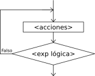

Repeat

The Repetir-Hasta Que instruction executes a sequence of instructions until the condition becomes true.
Repetir
<instrucciones>
Hasta Que <condición>
When this instruction is executed, the sequence of instructions that forms the loop body is run once and then the condition is evaluated. If the condition is false, the loop body is executed again and the condition is evaluated again. This repeats until the condition becomes true.
Note that, because the condition is evaluated at the end, the instructions in the loop body are executed at least once.
Also, to avoid infinite loops, the loop body must contain some instruction that modifies one or more variables involved in the condition so that eventually the condition becomes true and the loop ends.
If flexible syntax is enabled (see PSeudoCode Options) you may optionally use Mientras Que instead of Hasta Que, so the actions inside the loop are executed while the condition is true. Note that the word Que is what distinguishes the use of Mientras in a Repeat structure from the Mientras structure itself. If that word is omitted, it is interpreted as the beginning of a While loop rather than the end of a Repeat loop.
The Menu example shows a very simple program that uses this control structure to display a menu repeatedly until the user chooses the exit option.